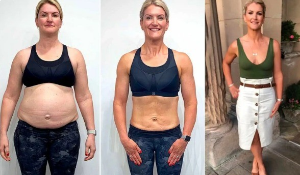

Veja como o Mounjaro de Pobre
está transformando vidas e veja os resultados da nossa comunidade!
Índice de Massa Corporal (IMC)
Seu IMC é --
Abaixo do Peso
Normal
Sobrepeso
Obesidade
⚠️ Seu metabolismo pode estar te sabotando sem que você perceba!
Mesmo estando no peso normal, seu corpo pode estar retendo toxinas e trabalhando de forma mais lenta, dificultando a queima de gordura e deixando você com menos energia.
❌ Alguns sinais de alerta:
- Metabolismo lento e dificuldade para emagrecer mesmo comendo pouco.
- Cansaço constante e sensação de inchaço.
- Acúmulo de gordura em áreas específicas do corpo, principalmente na barriga.
✨ Com o Mounjaro de Pobre, seu corpo acelera a queima de gordura naturalmente!
A combinação ideal de ingredientes pode ativar seu metabolismo, reduzir a retenção de líquidos e aumentar sua disposição.
Descubra agora como o Mounjaro de Pobre pode transformar seu corpo!
Veja a transformação da Silvia!
